Initiation au langage et objets de R
Structure des objets
Sous R, les éléments de base sont des objets : des données (vecteurs, matrices, …), des fonctions, des graphiques, … Ces objets se différencient par leur mode décrivant leur contenu, et leur classe décrivant leur structure. Les objets atomiques sont de mode homogène et les objets récursifs sont de mode hétérogène. Les différents modes sont null (objet vide), logical, numeric, complex, character.
Les classes d’objets les plus courantes sont : vector,
matrix, array, factor, data.frame, list. On peut avoir des
vecteurs, matrices, tableaux, … de mode null (objet vide), logical
(TRUE, FALSE, NA), numeric, complex, character. Par contre les listes et
les tableaux peuvent être composés d’éléments hétérogènes. On utilise la
commande class() pour connaître la classe d’un objet et
str()pour connaitre la nature des éléments composant
l’objet.
La principale difficulté en R réside dans l’identification des types d’objets manipulés. Nous allons dans ce tutoriel présenter ces différents objets, les opérations et manipulations basiques que l’on peut faire, …
On peut stocker un objet dans une variable (ex a) à l’aide
de a<- ... ou a= .... Pour lister les
variables actuellement disponibles dans la session de travail, on
utilise la fonction ls(). Pour effacer une ou plusieurs
variables, on utilise la fonction rm(). La commande
rm(list=ls()) permet d’effacer toutes les variables en
mémoire.
Opération sur les scalaires
Opérations
Les opérations élémentaires sur les scalaires sont
*,-, +, /,
^.
Sous R, tapez les commandes suivantes. Vous chercherez en particulier à bien identifier les différents types de données :
2 + 2
exp(10)
a = log(2)
a
b = cos(10)
b
a - b
a * b
d <- 2 < 3
d
dd <- FALSE
dd - d
dd + d
e <- "toto"
class(e)
str(e)is.xxx()/as.xxx()
Pour tester si un objet obj est de type xxx, on
utilise la commande is.xxx(obj). On peut aussi contraindre
si possible l’objet obj au type xxx avec la commande
as.xxx(obj).
a = 4.3
is.numeric(a)[1] TRUEis.complex(a)[1] FALSEis.character(a)[1] FALSEas.character(a)[1] "4.3"b <- "toto"
is.numeric(b)[1] FALSEas.list(b)[[1]]
[1] "toto"Arrondir
Pour obtenir des valeurs arrondies sur des valeurs numériques, vous
pouvez utiliser l’une des commandes suivantes round(),
ceiling(), floor(), trunc() ou
signif() (voir l’aide ?round). Comparez les
codes suivantes:
a = 1.3579
floor(a)[1] 1ceiling(a)[1] 2round(a, digits = 2)[1] 1.36signif(a, digits = 2)[1] 1.4is.integer(floor(a))[1] FALSEis.numeric(floor(a))[1] TRUEBooléens et opérations logiques
En R, un booléen est représenté par TRUE ou FALSE.
Les opérations logiques, <, >,
<=, >=, != (différent),
== (égal) retournent TRUE ou FALSE. On
peut définir plusieurs conditions à remplir avec les opérateurs
& (ET) et | (OU).
Attention, R considère qu’un booléen a FALSE vaut \(0\) et qu’un booléen a TRUE vaut
\(1\). Il est donc capable d’évaluer
TRUE + 5 bien qu’en toute logique, cela n’a aucun sens!
Voici quelques exemples de manipulation des booléens :
a = 3
b = 6
a <= b[1] TRUEa != b[1] TRUE(b - 3 == a) & (b >= a)[1] TRUE(b == a) | (b >= a)[1] TRUELes caractères
On donne ici quelques fonctions de base sur la manipulation des chaînes de caractères. Dans le tutoriel 4 de R avancé, on présentera le package stringr qui est très utilisé pour gérer et manipuler des chaînes de caractères.
paste()
Pour concaténer, juxtaposer des chaînes de caractères on utilise la
fonction paste()
Ex = paste("Bonjour", "à", "toutes", "et", "tous", "!")
paste("Bonjour", "à", "toutes", "et", "tous", "!", sep = "_")[1] "Bonjour_à_toutes_et_tous_!"x = c("Bonjour", "à", "vous")
paste(x)[1] "Bonjour" "à" "vous" paste(x, collapse = "++")[1] "Bonjour++à++vous"nchar()
On accède à la longueur d’une chaîne avec la fonction
nchar()
nchar(Ex)[1] 26substr() / substring()
La fonction substr() permet d’extraire une partie d’une
chaîne à partir des attributs « start » et « stop ». On peut aussi
remplacer des segments d’une chaine.
substr(Ex, start = 3, stop = 9)[1] "njour à"substr(Ex, start = 3, stop = 9) <- "@@@"
Ex[1] "Bo@@@ur à toutes et tous !"On peut aussi utiliser la fonction substring()
Ex = paste("Bonjour", "à", "toutes", "et", "tous", "!")
substring(Ex, first = 3)[1] "njour à toutes et tous !"substring(Ex, first = 3, last = 9) <- "@@@--<"
Ex[1] "Bo@@@--<à toutes et tous !"strsplit()
La fonction strsplit() permet de scinder une chaîne de
caractères :
Ex = paste("Bonjour", "à", "toutes", "et", "tous", "!")
strsplit(Ex, split = " ")[[1]]
[1] "Bonjour" "à" "toutes" "et" "tous" "!" strsplit(Ex, split = c("o", " "))[[1]]
[1] "B" "nj" "ur à t" "utes et t" "us !" La sortie de la fonction strsplit() est une liste (voir
section sur list)
grep()
La fonction grep() permet de rechercher les éléments
d’une liste.
Ex1 = c("tomate", "concombre", "mais", "courgette", "poivron", "carotte", "betterave")
Ex1[1] "tomate" "concombre" "mais" "courgette" "poivron" "carotte"
[7] "betterave"grep(pattern = "o", Ex1, value = FALSE) # donne les indices des éléments contenant un 'o' dans Ex[1] 1 2 4 5 6grep(pattern = "o", Ex1, value = TRUE) # Donne les éléments de Ex1 qui contiennent la lettre 'o'[1] "tomate" "concombre" "courgette" "poivron" "carotte" On peut utiliser la fonction grep() avec les expressions
régulières disponible sous R, il faut penser à mettre l’option
fixed=FALSE. Pour plus de détail, voir
?regex.
gsub()
Enfin pour remplacer un pattern dans une chaine de caractère, on peut
utiliser la fonction gsub()
gsub(pattern = "o", replacement = "@", Ex1, fixed = TRUE)[1] "t@mate" "c@nc@mbre" "mais" "c@urgette" "p@ivr@n" "car@tte"
[7] "betterave"Vecteurs (vector)
Un vecteur est un ensemble ordonné d’éléments de même nature
(numérique, logique ou alphanumérique). La création d’un vecteur peut se
faire par la commande c(e1,e2,...). On peut également
générer une séquence avec la commande seq(a,b,t) où \(a\) est le premier terme, le dernier terme
est \(\leq b\) et le pas est \(t\). Pour créer un vecteur constitué de
l’élément \(x\) répété \(n\) fois, on utilise la commande
rep(x,n).
Exemples
On donne ici quelques exemples à tester sous R pour vous familiariser
avec les vecteurs. En particulier, vous pouvez découvrir des fonctions
utiles avec les vecteurs comme length(),
sum(), sort(), … , les opérations usuelles,
l’extraction d’éléments d’un vecteur, …
Commande c(...)
d <- c(2, 3, 5, 8, 4, 6)
d[1] 2 3 5 8 4 6is.vector(d)[1] TRUEc(2, 5, "toto")[1] "2" "5" "toto"1:10 [1] 1 2 3 4 5 6 7 8 9 10Commande seq(...)
seq(1, 10) [1] 1 2 3 4 5 6 7 8 9 10seq(from = 1, to = 20, by = 2) [1] 1 3 5 7 9 11 13 15 17 19seq(1, 20, by = 5)[1] 1 6 11 16seq(1, 20, length = 5)[1] 1.00 5.75 10.50 15.25 20.00Commande rep(...)
rep(5, times = 10) [1] 5 5 5 5 5 5 5 5 5 5rep(c(1, 2), 3)[1] 1 2 1 2 1 2rep(c(1, 2), each = 3)[1] 1 1 1 2 2 2Extraire des éléments
d[1] 2 3 5 8 4 6d[2][1] 3d[2:3][1] 3 5d[c(1, 3, 6)][1] 2 5 6d[-3][1] 2 3 8 4 6d[-(1:2)][1] 5 8 4 6Opérations
Additionner ou soustraire un scalaire d’un vecteur
d + 4[1] 6 7 9 12 8 10d - 4[1] -2 -1 1 4 0 2Multiplier ou diviser un vecteur par un scalaire
2 * d[1] 4 6 10 16 8 12d/3[1] 0.6666667 1.0000000 1.6666667 2.6666667 1.3333333 2.0000000Multiplier/ diviser deux vecteurs terme à terme
e <- rep(2, 6)
d * e[1] 4 6 10 16 8 12d/e[1] 1.0 1.5 2.5 4.0 2.0 3.0Fonctions usuelles
d = c(2, 3, 5, 8, 4, 6)
d[1] 2 3 5 8 4 6Longueur d’un vecteur
length(d)[1] 6Somme des termes d’un vecteur numérique
sum(d)[1] 28Somme des termes cumulés d’un vecteur numérique
cumsum(d)[1] 2 5 10 18 22 28Différence des termes successifs d’un vecteur numérique
diff(d)[1] 1 2 3 -4 2Vérifier si d est un vecteur
is.vector(d)[1] TRUETransposition d’un vecteur
t(d) [,1] [,2] [,3] [,4] [,5] [,6]
[1,] 2 3 5 8 4 6Produit scalaire
t(d) %*% e [,1]
[1,] 56NA (Not Available) signale une donnée manquante
d[3] <- NA
d[1] 2 3 NA 8 4 6is.na(d)[1] FALSE FALSE TRUE FALSE FALSE FALSEany(is.na(d))[1] TRUEall(is.na(d))[1] FALSEAutres fonctions intéressantes avec les vecteurs :
abs(), sort(), order(),
which(), …
a <- c(3, -1, 5, 2, -7, 3, 9)
abs(a)[1] 3 1 5 2 7 3 9sort(a)[1] -7 -1 2 3 3 5 9order(a)[1] 5 2 4 1 6 3 7b = a == 3
b[1] TRUE FALSE FALSE FALSE FALSE TRUE FALSEsort(b)[1] FALSE FALSE FALSE FALSE FALSE TRUE TRUEtext <- c("petit", "moyen", "grand")
is.vector(text)[1] TRUEf = c(a = 12, b = 26, c = 32, d = 41)
f a b c d
12 26 32 41 names(f)[1] "a" "b" "c" "d"f["a"] a
12 names(f) <- c("a1", "a2", "a3", "a4")
fa1 a2 a3 a4
12 26 32 41 Notez la différence entre les commandes suivantes :
f > 30 a1 a2 a3 a4
FALSE FALSE TRUE TRUE f[f > 30]a3 a4
32 41 which(f > 30)a3 a4
3 4 f[2] <- 22
f + 100 a1 a2 a3 a4
112 122 132 141 Etonnant ces commandes suivantes, non ?
fa1 a2 a3 a4
12 22 32 41 d[1] 2 3 NA 8 4 6f + d[1] 14 25 NA 49 16 28On peut appliquer une fonction à tous les éléments d’un vecteur facilement.
cos(f) a1 a2 a3 a4
0.8438540 -0.9999608 0.8342234 -0.9873393 Exercice
Enoncé
Question 1 : Créer les vecteurs suivants :
- le vecteur \(a\) constitué des entiers pairs jusqu’à 30
- le vecteur \(b\) contenant \(v=5\), deux fois la valeur de \(v\), puis un tiers de la valeur de \(v\), puis trois fois \(v^2\), puis \(\sqrt{v}\), puis le quatrième élément de \(a\).
- le vecteur \(c\) contenant 6 chiffres compris entre 4 et 30 avec un intervalle constant.
- le vecteur \(d\) contenant la somme des éléments de \(c\), puis la longueur de \(b\), puis 5 fois le chiffre 3.
Question 2 : Extraire du vecteur \(a\) :
- le quatrième élément
- tous les éléments sauf le quatrième
- tous les éléments supérieurs à 10
Question 3 : À quoi sert la fonction unique ? Illustrer
son fonctionnement sur un exemple.
Correction
Question 1 :
a = seq(2, 30, 2)
a [1] 2 4 6 8 10 12 14 16 18 20 22 24 26 28 30v = 5
b = c(v, 2 * v, v/3, 3 * (v^2), sqrt(v), a[4])
b[1] 5.000000 10.000000 1.666667 75.000000 2.236068 8.000000c = seq(4, 30, length = 6)
c[1] 4.0 9.2 14.4 19.6 24.8 30.0d = c(sum(c), length(b), rep(3, 5))
d[1] 102 6 3 3 3 3 3Question 2 :
a[4][1] 8a[-4] [1] 2 4 6 10 12 14 16 18 20 22 24 26 28 30a[a > 10] [1] 12 14 16 18 20 22 24 26 28 30Question 3 :
help(unique)
unique(d)[1] 102 6 3La fonction unique() permet de récupérer les éléments
d’un vecteur (et pas que) sans réplication.
Matrices (matrix)
Comme les vecteurs, les matrices sont de mode quelconque mais ne
contiennent que des éléments de même nature. Pour créer une matrice, on
utilise la commande matrix(vec,nrow=n,ncol=p) où
vec est le vecteur contenant les éléments de la matrice de
taille \(n\) par \(p\), qui seront rangés en colonne sauf si
l’option byrow=T est utilisée.
Exemples
On donne ici quelques exemples à tester sous R pour vous familiariser
avec les matrices. En particulier, vous pouvez découvrir des fonctions
utiles avec les matrices comme dim(), t(),
cbind(), rbind()… , les opérations usuelles
dont la différence entre A*B et A%*%B,
l’extraction d’éléments d’une matrice, …
matrix()
A = matrix(1:15, ncol = 5)
A [,1] [,2] [,3] [,4] [,5]
[1,] 1 4 7 10 13
[2,] 2 5 8 11 14
[3,] 3 6 9 12 15class(A)[1] "matrix" "array" B = matrix(1:15, nc = 5, byrow = T)
B2 = B
B2[1, 1] = "toto"
B2 [,1] [,2] [,3] [,4] [,5]
[1,] "toto" "2" "3" "4" "5"
[2,] "6" "7" "8" "9" "10"
[3,] "11" "12" "13" "14" "15"rownames(A) = c(paste("ligne", 1:3, sep = ""))
A [,1] [,2] [,3] [,4] [,5]
ligne1 1 4 7 10 13
ligne2 2 5 8 11 14
ligne3 3 6 9 12 15Extraire
A [,1] [,2] [,3] [,4] [,5]
ligne1 1 4 7 10 13
ligne2 2 5 8 11 14
ligne3 3 6 9 12 15A[1, 3]ligne1
7 A[, 2]ligne1 ligne2 ligne3
4 5 6 A[2, ][1] 2 5 8 11 14A[1:3, c(2, 5)] [,1] [,2]
ligne1 4 13
ligne2 5 14
ligne3 6 15A[1:3, -c(2, 5)] [,1] [,2] [,3]
ligne1 1 7 10
ligne2 2 8 11
ligne3 3 9 12cbind() / rbind()
Pour concaténer deux matrices, on peut utiliser les fonctions
rbind() ou cbind().
A [,1] [,2] [,3] [,4] [,5]
ligne1 1 4 7 10 13
ligne2 2 5 8 11 14
ligne3 3 6 9 12 15B [,1] [,2] [,3] [,4] [,5]
[1,] 1 2 3 4 5
[2,] 6 7 8 9 10
[3,] 11 12 13 14 15cbind(A, B) [,1] [,2] [,3] [,4] [,5] [,6] [,7] [,8] [,9] [,10]
ligne1 1 4 7 10 13 1 2 3 4 5
ligne2 2 5 8 11 14 6 7 8 9 10
ligne3 3 6 9 12 15 11 12 13 14 15rbind(A, B) [,1] [,2] [,3] [,4] [,5]
ligne1 1 4 7 10 13
ligne2 2 5 8 11 14
ligne3 3 6 9 12 15
1 2 3 4 5
6 7 8 9 10
11 12 13 14 15Fonctions utiles
Dimension d’une matrice
dim(A)[1] 3 5Nombre de lignes et de colonnes
nrow(A)[1] 3ncol(A)[1] 5Transposée et déterminant d’une matrice
t(A) ligne1 ligne2 ligne3
[1,] 1 2 3
[2,] 4 5 6
[3,] 7 8 9
[4,] 10 11 12
[5,] 13 14 15det(A[, 3:5])[1] 0Inversion d’une matrice
solve(A[1:2, 2:3]) ligne1 ligne2
[1,] -2.666667 2.333333
[2,] 1.666667 -1.333333Matrice diagonale et diagonale d’une matrice
diag(A)[1] 1 5 9diag(1:5) [,1] [,2] [,3] [,4] [,5]
[1,] 1 0 0 0 0
[2,] 0 2 0 0 0
[3,] 0 0 3 0 0
[4,] 0 0 0 4 0
[5,] 0 0 0 0 5Matrice de booléens
A > 5 [,1] [,2] [,3] [,4] [,5]
ligne1 FALSE FALSE TRUE TRUE TRUE
ligne2 FALSE FALSE TRUE TRUE TRUE
ligne3 FALSE TRUE TRUE TRUE TRUEA[A < 5] <- 0
A [,1] [,2] [,3] [,4] [,5]
ligne1 0 0 7 10 13
ligne2 0 5 8 11 14
ligne3 0 6 9 12 15Quelques autres fonctions sur les matrices
colSums(A)[1] 0 11 24 33 42apply(A, 2, sum)[1] 0 11 24 33 42rowSums(A)ligne1 ligne2 ligne3
30 38 42 apply(A, 1, sum)ligne1 ligne2 ligne3
30 38 42 rowMeans(A)ligne1 ligne2 ligne3
6.0 7.6 8.4 apply(A, 1, mean)ligne1 ligne2 ligne3
6.0 7.6 8.4 apply(A, 1, max)ligne1 ligne2 ligne3
13 14 15 Remarque : on reverra dans la section Programmation la fonction apply() qui
permet en particulier d’éviter les boucles for.
Opérations
Attention à la multiplication matricielle %*% et la
multiplication terme à terme *!
Opérations terme à terme de 2 matrices
A + B [,1] [,2] [,3] [,4] [,5]
ligne1 1 2 10 14 18
ligne2 6 12 16 20 24
ligne3 11 18 22 26 30A * B [,1] [,2] [,3] [,4] [,5]
ligne1 0 0 21 40 65
ligne2 0 35 64 99 140
ligne3 0 72 117 168 225Multiplication de matrices
t(B) %*% A [,1] [,2] [,3] [,4] [,5]
[1,] 0 96 154 208 262
[2,] 0 107 178 241 304
[3,] 0 118 202 274 346
[4,] 0 129 226 307 388
[5,] 0 140 250 340 430Multiplication par un scalaire
5 * A [,1] [,2] [,3] [,4] [,5]
ligne1 0 0 35 50 65
ligne2 0 25 40 55 70
ligne3 0 30 45 60 75Exercice
Enoncé
Créer la matrice \(A=\left(\begin{array}{c c c } 3 & 3 & 3\\ 4 & 4 & 4\\ 5 & 5 & 5\end{array}\right).\)
Ajouter 2 à tous les éléments de \(A\).
Créer la matrice \(B\) en ajoutant la ligne \((1,2,3)\) à \(A\), puis la colonne \((1,1,1,1)'\). Déterminer la dimension de \(B\).
Extraire de \(B\) la sous-matrice \(C\) composée des deux premières colonnes et des deux dernières lignes. Calculer sa transposée et son déterminant. Inverser cette sous-matrice \(C\).
Correction
Question 1
A = matrix(c(rep(3, 3), rep(4, 3), rep(5, 3)), nrow = 3, byrow = T)
A [,1] [,2] [,3]
[1,] 3 3 3
[2,] 4 4 4
[3,] 5 5 5Question 2
A + 2 [,1] [,2] [,3]
[1,] 5 5 5
[2,] 6 6 6
[3,] 7 7 7Question 3
B = rbind(A, 1:3)
B = cbind(B, rep(1, 4))
dim(B)[1] 4 4B [,1] [,2] [,3] [,4]
[1,] 3 3 3 1
[2,] 4 4 4 1
[3,] 5 5 5 1
[4,] 1 2 3 1Question 4
C = B[3:4, 1:2]
C [,1] [,2]
[1,] 5 5
[2,] 1 2t(C) [,1] [,2]
[1,] 5 1
[2,] 5 2det(C)[1] 5solve(C) [,1] [,2]
[1,] 0.4 -1
[2,] -0.2 1C %*% solve(C) [,1] [,2]
[1,] 1 0
[2,] 0 1Les tableaux (array)
Les tableaux sont des matrices de dimensions supérieures à 2. On peut
les générer à partir de la commande array(vec,c(n,p,q,...))
où vec est le vecteur contenant les éléments du tableau et
l’argument c(n,p,q,…) désigne les dimensions du tableau: \(n\) lignes, \(p\) colonnes, \(q\) matrices, …
array()
E = array(c(1:8, rep(1, 8), seq(0, 1, len = 8)), dim = c(2, 4, 3))
E, , 1
[,1] [,2] [,3] [,4]
[1,] 1 3 5 7
[2,] 2 4 6 8
, , 2
[,1] [,2] [,3] [,4]
[1,] 1 1 1 1
[2,] 1 1 1 1
, , 3
[,1] [,2] [,3] [,4]
[1,] 0.0000000 0.2857143 0.5714286 0.8571429
[2,] 0.1428571 0.4285714 0.7142857 1.0000000E[, , 1] [,1] [,2] [,3] [,4]
[1,] 1 3 5 7
[2,] 2 4 6 8Fonctions usuelles
dim(E)[1] 2 4 3length(E)[1] 24nrow(E)[1] 2ncol(E)[1] 4aperm(E), , 1
[,1] [,2] [,3] [,4]
[1,] 1 3.0000000 5.0000000 7.0000000
[2,] 1 1.0000000 1.0000000 1.0000000
[3,] 0 0.2857143 0.5714286 0.8571429
, , 2
[,1] [,2] [,3] [,4]
[1,] 2.0000000 4.0000000 6.0000000 8
[2,] 1.0000000 1.0000000 1.0000000 1
[3,] 0.1428571 0.4285714 0.7142857 1E + 10, , 1
[,1] [,2] [,3] [,4]
[1,] 11 13 15 17
[2,] 12 14 16 18
, , 2
[,1] [,2] [,3] [,4]
[1,] 11 11 11 11
[2,] 11 11 11 11
, , 3
[,1] [,2] [,3] [,4]
[1,] 10.00000 10.28571 10.57143 10.85714
[2,] 10.14286 10.42857 10.71429 11.00000apply()
H = array(1:12, c(2, 3, 2))
H, , 1
[,1] [,2] [,3]
[1,] 1 3 5
[2,] 2 4 6
, , 2
[,1] [,2] [,3]
[1,] 7 9 11
[2,] 8 10 12
Représentation de H
apply(H, 1, sum)[1] 36 42sum(c(1, 3, 5, 7, 9, 11))[1] 36apply(H, 2, sum)[1] 18 26 34sum(c(1, 2, 7, 8))[1] 18apply(H, 3, sum)[1] 21 57sum(1:6)[1] 21Listes (list)
Une liste est une collection ordonnée d’objets qui peuvent être de
nature différente. Les listes sont en particulier utilisées par
certaines fonctions (cf section Programmation)
pour renvoyer des résultats complexes sous forme d’un seul objet. On
utilise la fonction list(nom1=el1,nom2=el2,...)
(l’utilisation des noms étant facultative) pour générer une liste. On
peut accéder à chaque élément de la liste à l’aide de son index entre
double crochets [[...]], ou par son nom précédé du signe
$.
Exemples
list(...)
x = list("toto", 1:8)
x[[1]]
[1] "toto"
[[2]]
[1] 1 2 3 4 5 6 7 8class(x)[1] "list"Création d’une liste avec des noms aux éléments
y = list(matrice = matrix(1:15, ncol = 5), vecteur = seq(1, 20, by = 5), texte = "toto",
scalaire = 8)
y$matrice
[,1] [,2] [,3] [,4] [,5]
[1,] 1 4 7 10 13
[2,] 2 5 8 11 14
[3,] 3 6 9 12 15
$vecteur
[1] 1 6 11 16
$texte
[1] "toto"
$scalaire
[1] 8Extraction
Extraction d’un élément par son numéro
x[[1]][1] "toto"Attention, cette commande n’est pas possible:
x[[1]] + 1par contre celle-ci est possible
x[[2]] + 10[1] 11 12 13 14 15 16 17 18y[[1]] [,1] [,2] [,3] [,4] [,5]
[1,] 1 4 7 10 13
[2,] 2 5 8 11 14
[3,] 3 6 9 12 15y$matrice [,1] [,2] [,3] [,4] [,5]
[1,] 1 4 7 10 13
[2,] 2 5 8 11 14
[3,] 3 6 9 12 15y$vec[1] 1 6 11 16y[c("texte", "scalaire")]$texte
[1] "toto"
$scalaire
[1] 8Fonctions utiles
names(y)[1] "matrice" "vecteur" "texte" "scalaire"length(y)[1] 4length(y$vecteur)[1] 4cos(y$scal) + y[[2]][1][1] 0.8545summary(y) Length Class Mode
matrice 15 -none- numeric
vecteur 4 -none- numeric
texte 1 -none- character
scalaire 1 -none- numeric Exercice
Enoncé
Créer une liste contenant le nom de trois matières, les notes de 5 élèves pour chacune de ces matières, l’âge des 5 élèves et la filière (PO) d’appartenance de ces 5 élèves.
Récupérer les notes du 4ème élève
Créer une matrice contenant les notes et l’âge des 5 élèves.
Correction
matiere = c("Maths", "Chimie", "Sport")
age = c(20, 21, 22, 23, 24)
PO = c("MIC", "IMACS", "MIC", "MIC", "IC")
Notes = matrix(c(15, 12, 1, 14, 12, 6, 3, 14, 12, 16, 11, 12, 13, 14, 15), nrow = 5)
A = list(matieres = matiere, Notes = Notes, Age = age, PO = PO)
A$matieres
[1] "Maths" "Chimie" "Sport"
$Notes
[,1] [,2] [,3]
[1,] 15 6 11
[2,] 12 3 12
[3,] 1 14 13
[4,] 14 12 14
[5,] 12 16 15
$Age
[1] 20 21 22 23 24
$PO
[1] "MIC" "IMACS" "MIC" "MIC" "IC" A$Notes[4, ][1] 14 12 14B = cbind(A$Notes, A$Age)
B [,1] [,2] [,3] [,4]
[1,] 15 6 11 20
[2,] 12 3 12 21
[3,] 1 14 13 22
[4,] 14 12 14 23
[5,] 12 16 15 24Data frames
Sous R, un data.frame est analogue à une matrice mais le contenu des
colonnes peut être ici hétérogène. Un tableau de données est un ensemble
de vecteurs rangés colonne par colonne, chaque colonne correspondant à
une variable, chaque ligne à un individu. En particulier, lors d’études
statistiques, les données à étudier sont souvent représentées par un
data.frame sous R. Pour créer un tableau de données, on peut regrouper
des variables de même longueur à l’aide de la commande
data.frame(nom1=var1,nom2=var2,...). On peut par exemple
transformer une matrice en un tableau de données en utilisant la
commande as.data.frame(mat).
Exemple
On donne ici quelques exemples à tester sous R pour vous familiariser
avec les data.frames. En particulier, vous pouvez découvrir des
fonctions utiles dont summary(), attach(),
…
data.frame()
# Création du data.frame H
taille = runif(12, 150, 180)
masse = runif(12, 50, 90)
sexe = rep(c("M", "F", "F", "M"), 3)
H = data.frame(taille, masse, sexe)
H taille masse sexe
1 171.8216 86.16916 M
2 178.8600 76.40213 F
3 167.7718 85.58736 F
4 173.9192 81.87213 M
5 166.0689 63.14963 M
6 168.5309 73.40069 F
7 162.0680 78.35994 F
8 169.7592 53.30201 M
9 168.3618 68.92062 M
10 157.3739 80.82564 F
11 172.5103 53.20823 F
12 158.9888 56.39809 Mclass(H)[1] "data.frame"summary()/head()
La fonction summary() permet de résumer le contenu des
différentes colonnes d’un data.frame.
summary(H) taille masse sexe
Min. :157.4 Min. :53.21 Length:12
1st Qu.:165.1 1st Qu.:61.46 Class :character
Median :168.4 Median :74.90 Mode :character
Mean :168.0 Mean :71.47
3rd Qu.:172.0 3rd Qu.:81.09
Max. :178.9 Max. :86.17 La fonction head() permet de visualiser les premières
lignes d’un data.frame
head(H) taille masse sexe
1 171.8216 86.16916 M
2 178.8600 76.40213 F
3 167.7718 85.58736 F
4 173.9192 81.87213 M
5 166.0689 63.14963 M
6 168.5309 73.40069 Fdata.frame / list/matrix
Au travers de ces quelques commandes, vous pouvez voir les analogies entre data.frame, list et matrix mais restez prudent sur la nature de l’objet que vous manipulez!
H[1, ] taille masse sexe
1 171.8216 86.16916 MH$taille [1] 171.8216 178.8600 167.7718 173.9192 166.0689 168.5309 162.0680 169.7592
[9] 168.3618 157.3739 172.5103 158.9888H$sexe [1] "M" "F" "F" "M" "M" "F" "F" "M" "M" "F" "F" "M"is.data.frame(H)[1] TRUEis.matrix(H)[1] FALSEMH = as.matrix(H)
MH taille masse sexe
[1,] "171.8216" "86.16916" "M"
[2,] "178.8600" "76.40213" "F"
[3,] "167.7718" "85.58736" "F"
[4,] "173.9192" "81.87213" "M"
[5,] "166.0689" "63.14963" "M"
[6,] "168.5309" "73.40069" "F"
[7,] "162.0680" "78.35994" "F"
[8,] "169.7592" "53.30201" "M"
[9,] "168.3618" "68.92062" "M"
[10,] "157.3739" "80.82564" "F"
[11,] "172.5103" "53.20823" "F"
[12,] "158.9888" "56.39809" "M" summary(MH) taille masse sexe
Length:12 Length:12 Length:12
Class :character Class :character Class :character
Mode :character Mode :character Mode :character as.list(H)$taille
[1] 171.8216 178.8600 167.7718 173.9192 166.0689 168.5309 162.0680 169.7592
[9] 168.3618 157.3739 172.5103 158.9888
$masse
[1] 86.16916 76.40213 85.58736 81.87213 63.14963 73.40069 78.35994 53.30201
[9] 68.92062 80.82564 53.20823 56.39809
$sexe
[1] "M" "F" "F" "M" "M" "F" "F" "M" "M" "F" "F" "M"attach()/detach()
La fonction attach() permet d’accéder aux variables d’un
data.frame sans appeler le data.frame.
La fonction detach() peut être utilisée pour supprimer
la variable d’un data.frame, qui était précédemment attachée avec
attach().
rm(taille)
H$taille [1] 171.8216 178.8600 167.7718 173.9192 166.0689 168.5309 162.0680 169.7592
[9] 168.3618 157.3739 172.5103 158.9888attach(H)
taille [1] 171.8216 178.8600 167.7718 173.9192 166.0689 168.5309 162.0680 169.7592
[9] 168.3618 157.3739 172.5103 158.9888detach(H) # taille est alors introuvableExercice
Enoncé
On reprend le data.frame \(H\) contruit dans la sous-section Exemple.
- Extraire la masse des individus dont la taille est supérieure à 160.
- Extraire la masse et le sexe de ces mêmes individus.
- Extraire la taille des individus de sexe masculin dont la masse est
inférieure à 80 (c’est possible en une seule ligne avec
&).
Correction
Question 1
H$masse[H$taille > 160] [1] 86.16916 76.40213 85.58736 81.87213 63.14963 73.40069 78.35994 53.30201
[9] 68.92062 53.20823H[H$taille > 160, 2] [1] 86.16916 76.40213 85.58736 81.87213 63.14963 73.40069 78.35994 53.30201
[9] 68.92062 53.20823Question 2
H[H$taille > 160, 2:3] masse sexe
1 86.16916 M
2 76.40213 F
3 85.58736 F
4 81.87213 M
5 63.14963 M
6 73.40069 F
7 78.35994 F
8 53.30201 M
9 68.92062 M
11 53.20823 FH[H$taille > 160, c("masse", "sexe")] masse sexe
1 86.16916 M
2 76.40213 F
3 85.58736 F
4 81.87213 M
5 63.14963 M
6 73.40069 F
7 78.35994 F
8 53.30201 M
9 68.92062 M
11 53.20823 FQuestion 3
H$taille[H$sexe == "M" & H$masse < 80][1] 166.0689 169.7592 168.3618 158.9888H[H$sexe == "M" & H$masse < 80, "taille"][1] 166.0689 169.7592 168.3618 158.9888Premiers graphiques
Nous allons dans cette partie présenter les bases des graphiques en R. Une présentation plus spécifique du package ggplot2 est disponible dans le tutoriel 4 de R avancé.
Gestion des fenêtres graphiques
Pour ouvrir une fenêtre graphique, on utilise x11() sous
Unix, windows() sous Windows et quartz() sous
MacOS X. La commande dev.list() permet de lister les
fenêtres graphiques ouvertes. Il est important de clôturer une fenêtre
graphique avec la commande dev.off().
La fonction split.screen permet de partitionner une
fenêtre graphique active en plusieurs sous-fenêtres graphiques. Par
exemple, split.screen(c(1,2)) divise la fenêtre graphique
en 2 parties qu’on sélectionne avec screen(1) et
screen(2). On peut également obtenir de telles partitions
avec la commande layout ou l’option mfrow de la
fonction par().
Fonctions graphiques
En R il faut distinguer les fonctions graphiques principales qui créent une nouvelle fenêtre graphique lors de l’execution avec possibilité d’un titre, d’axes labélisés, … et les fonctions graphiques secondaires qui ont une action sur un graphique déjà existant.
Fonctions graphiques principales
Voici une liste des fonctions principales les plus connues :
| Fonction | Description |
|---|---|
| plot(x) | graphe des valeurs de x (axe des y) ordonnées sur l’axe des x |
| plot(x, y) | graphe bivarié de x (sur l’axe des x) et y (sur l’axe des y) |
| pie(x) | graphe en camembert |
| boxplot(x) | graphe boites à moustaches |
| pairs(x) | si x est une matrice ou un tableau de données, dessine tous les graphes bivariés entre les colonnes de x |
| hist(x) | histogramme des fréquences de x |
| barplot(x) | histogramme des valeurs de x |
| contour(x,y,z) | courbes de niveau (les données sont interpolées pour tracer les courbes), x et y doivent être des vecteurs et z une matrice telle que dim(z)=c(length(x), length(y)) |
| image(x,y,z) | idem mais les données sont représentées avec des couleurs |
| persp(x,y,z) | idem mais en perspective |
Pour chaque fonction, les options peuvent être trouvées via l’aide. Certaines de ces options sont identiques pour plusieurs fonctions graphiques; voici les principales (avec leurs éventuelles valeurs par défaut) :
| option | Description |
|---|---|
| add=FALSE | si TRUE superpose le graphe au graphe existant (s’il y en a un) |
| axes=TRUE | si FALSE ne trace pas les axes ni le cadre |
| type= | le type de graphe qui sera dessiné, p : points, l : lignes, b : points connectés par des lignes, h : lignes verticales,o : idem mais les lignes recouvrent les points, s : escaliers, les données étant représentées par le sommet (par le bas) des lignes verticales |
| xlim=,ylim= | fixe les limites inférieures et supérieures des axes |
| xlab=,ylab= | annotations des axes (variables de mode caractère) |
| main= | titre principal (variable de mode caractère) |
| sub= | sous-titre (écrit dans une police plus petite) |
Fonctions graphiques secondaires
Fonctions graphiques secondaires les plus connues :
| Code | Description |
|---|---|
| points(x,y) | ajoute des points (l’option type= peut être utilisée) |
| lines(x,y) | idem mais avec des lignes |
| text(x,y,labels,…) | ajoute le texte spécifié par labels aux coordonnées (x,y) |
| segments(x0,y0,x1,y1) | trace des lignes des points (x0,y0) aux points (x1,y1) |
| abline(a,b) | trace une ligne de pente b et d’ordonnée à l’origine a |
| abline(h=y) | trace une ligne horizontale sur l’ordonnée y |
| abline(v=x) | trace une ligne verticale sur l’abscisse x |
| rect(x1,y1,x2,y2) | trace un rectangle délimité à gauche par x1, à droite par x2,en bas par y1 et en haut par y2 |
| polygon(x,y) | trace un polygone reliant les points dont les coordonnées sont données par x et y |
| legend(x,y,legend) | ajoute la légende au point de coordonnées (x,y) avec les symboles donnés par legend |
| title() | ajoute un titre et optionnellement un sous-titre |
| axis(side, vect) | ajoute un axe en bas (side=1), à gauche (2), en haut (3) ou à droite (4) ; vect (optionnel) indique les abscisses (ou ordonnées) où les graduations seront tracées |
| box() | ajoute un cadre autour du graphe |
Exemples
Exemple 1
x = seq(-10, 10, l = 50)
# 2 graphiques
par(mfrow = c(1, 2))
# premier graphique
plot(x, sin(x), type = "l", col = 1, main = "sinus")
abline(v = 0, col = "blue", lwd = 5, lty = 3)
abline(h = sin(0.7), col = 3)
text(-5, -0.5, "texte", font = 3)
# deuxieme graphique
plot(x, cos(x), type = "b", col = 3, xlab = "Abscisses")
points(x, cos(x), type = "l")
points(0, 1, pch = "o", cex = 3, col = "blue")
lines(c(-5, 5), c(0, 0), lty = 2, col = 2)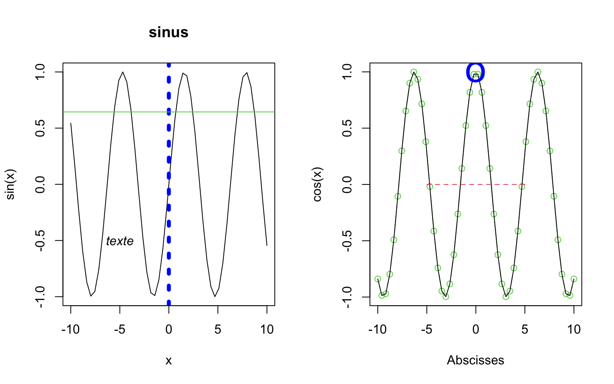
Exemple 2
data(iris)
par(mfrow = c(2, 2))
plot(iris[, 1], iris[, 2], xlab = "Sepal Length", ylab = "Sepal Width", main = "Iris data",
col = "red", type = "p")
points(iris[iris$Species == "setosa", 1], iris[iris$Species == "setosa", 2], col = "green",
pch = 20)
hist(iris[, 1], xlab = "Sepal Length", main = "Histogramme de la variable Sepal Length")
boxplot(iris[, 1:4], las = 2)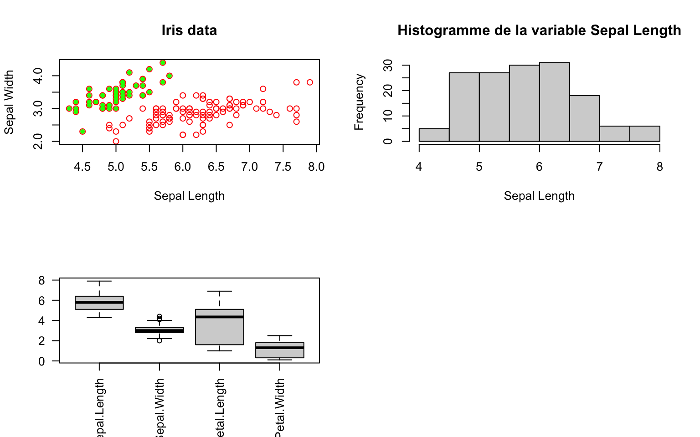
pairs(iris[, 1:4])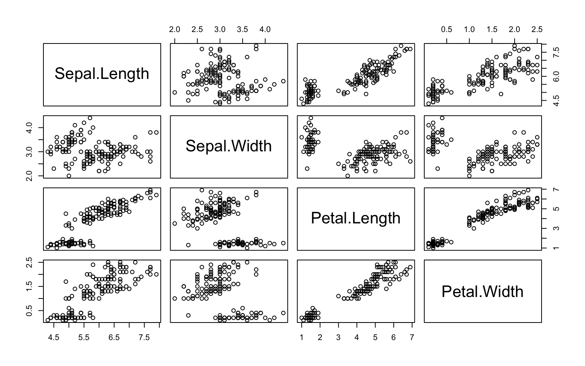
par(mfrow = c(2, 2))
pie(table(iris[, 5]))
pie(table(iris[, 5]), clockwise = T)
barplot(table(iris[, 5]))
stripchart(iris, las = 1)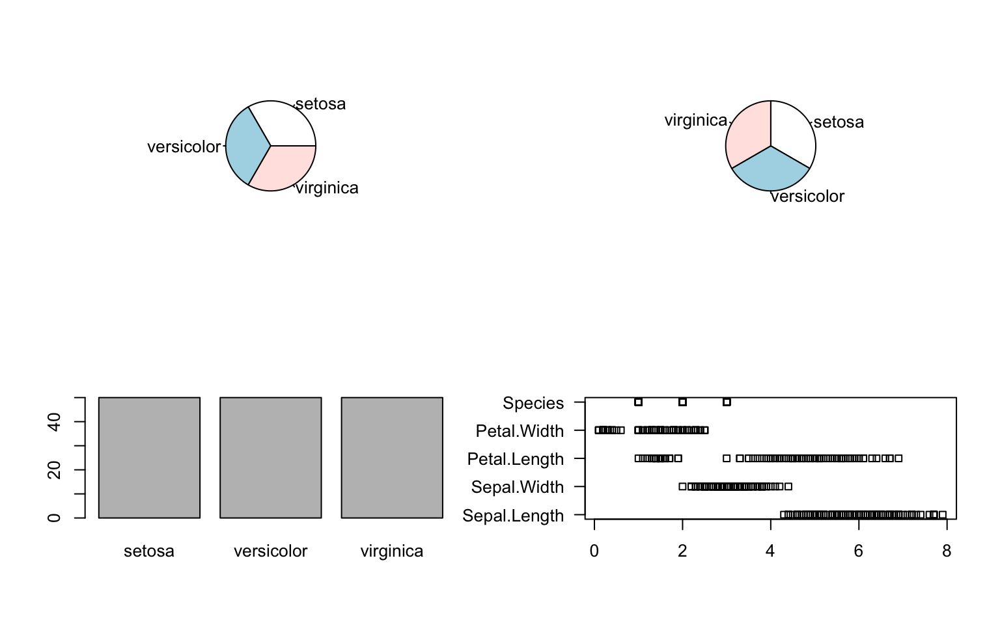
Exemple 3
M = matrix(1:100, ncol = 10)
image(M)
x = seq(-10, 10, length = 30)
y = x
f = function(x, y) {
r = sqrt(x^2 + y^2)
10 * sin(r)/r
}
z = outer(x, y, f)
z[is.na(z)] = 1
persp(x, y, z)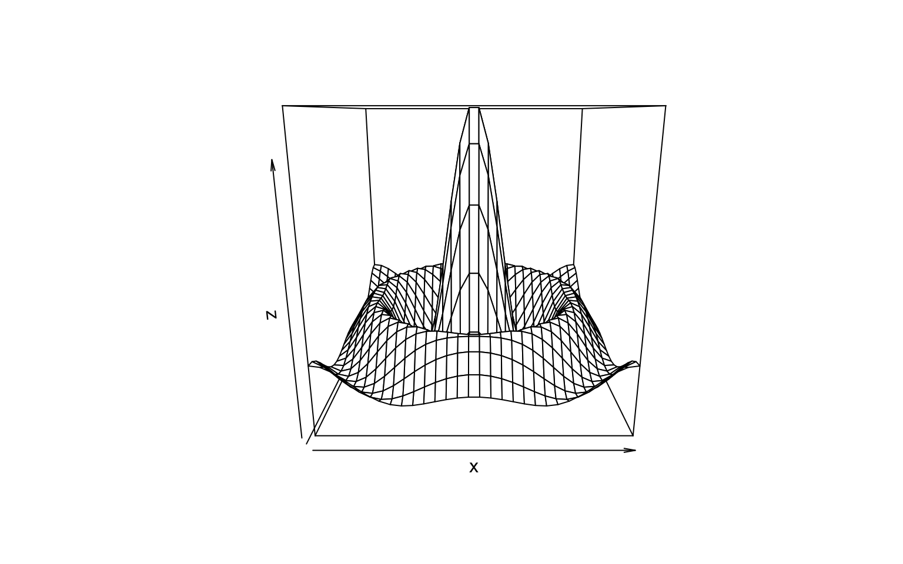
persp(x, y, z, theta = 30, phi = 30, expand = 0.5, col = "lightblue")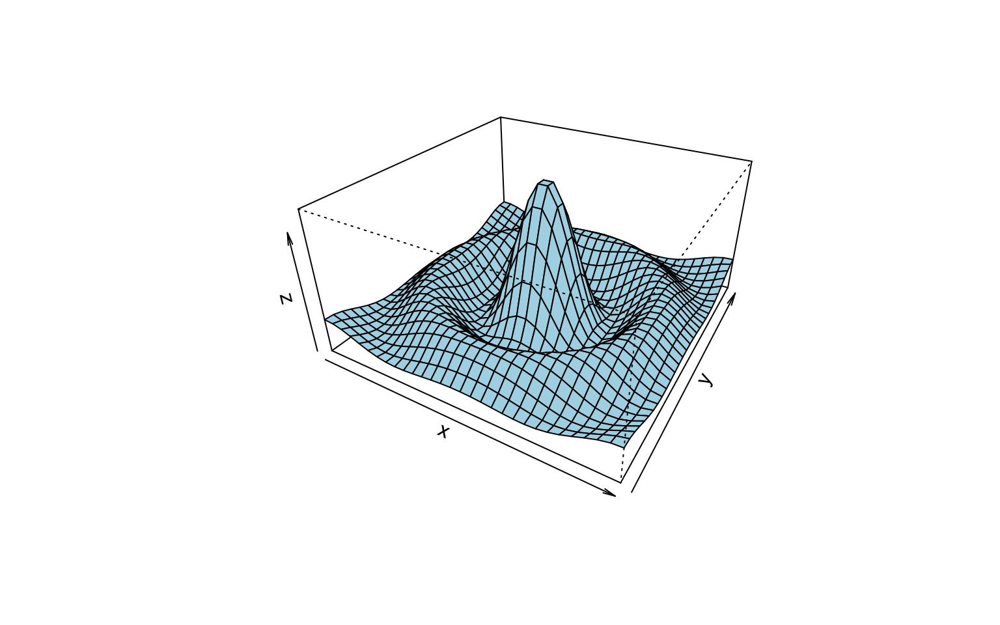
image(x, y, z)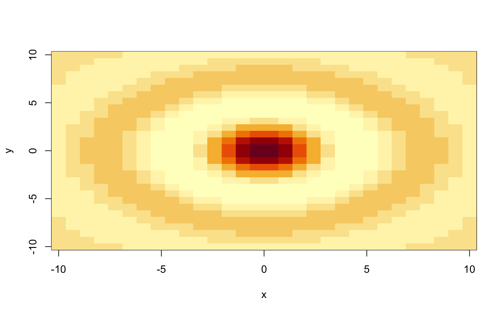
contour(x, y, z)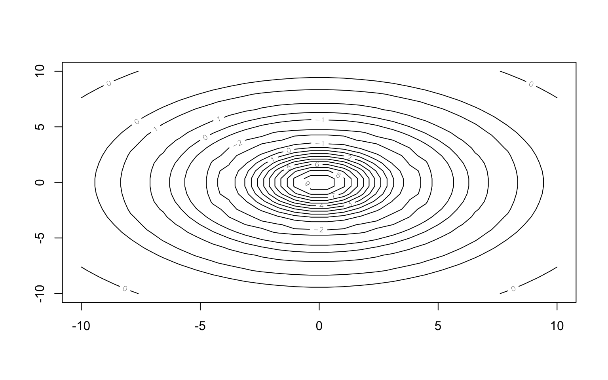
filled.contour(x, y, z)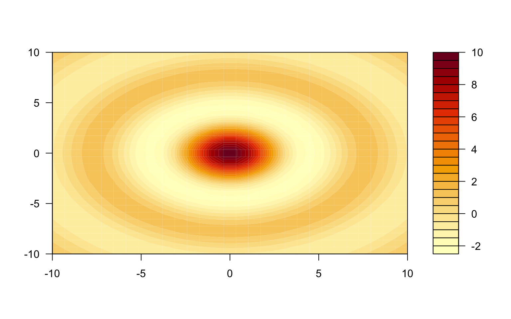
image(x, y, z)
contour(x, y, z, add = T)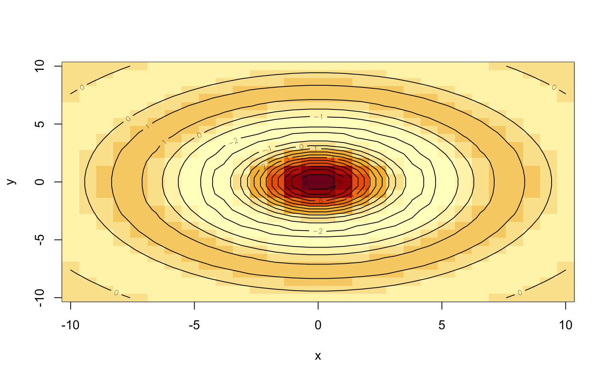
Exercices
Enoncé 1
- Tracer la fonction arctangente entre \(-10\) et \(10\)
- Ajouter les deux asymptotes en \(-\infty\) et \(+\infty\) en bleu
- Ajouter les points sur la courbe pour \(x=-\pi\), \(0\) et \(\pi\) en vert
- Ajouter la tangente en zéro en pointillés rouge
Enoncé 2
- Charger les données “airquality” disponible sous R à l’aide de
data() - Utiliser la commande
pairs()pour visualiser variable contre variable - Créer une fenêtre graphique contenant les boxplots des 4 premières variables, l’histogramme de la variable Ozone, le graphique en camembert de la variable Month, et le graphique représentant la variable Wind contre la variable Ozone avec une couleur par mois et une légende.
Enoncé 3
Saurez-vous tracer la “tête à Toto” ?
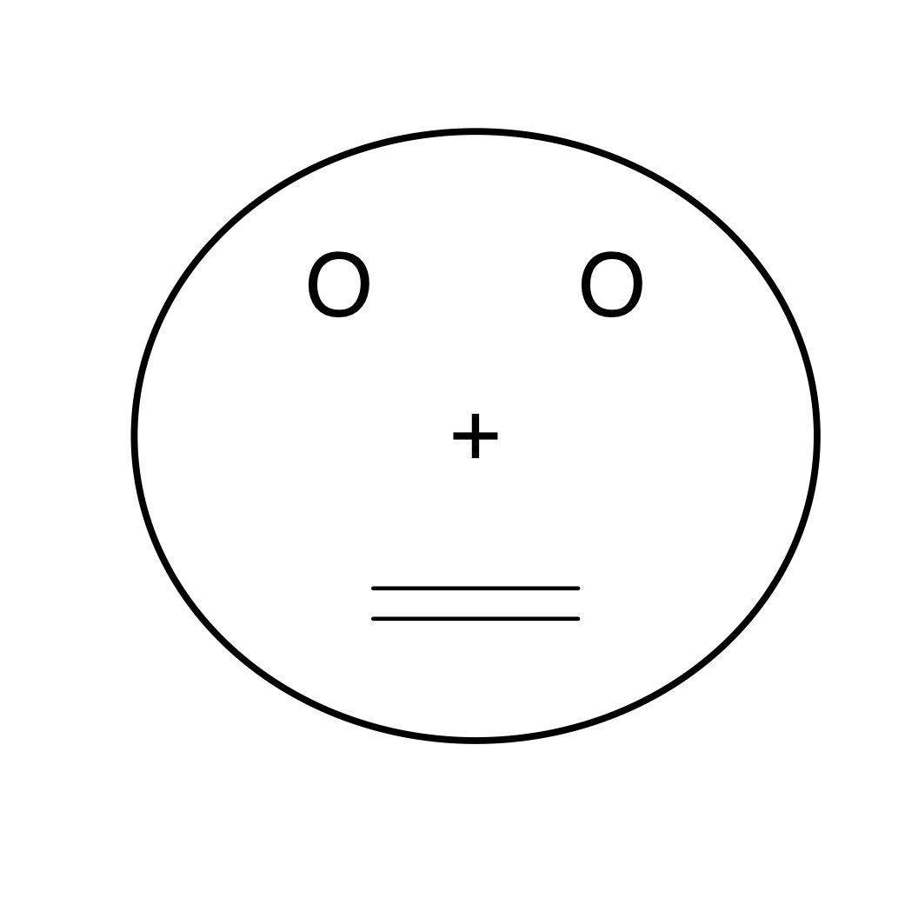
Correction
Exercice 1 :
x = seq(-10, 10, 0.01)
plot(x, atan(x), type = "l", ylim = c(-pi/2 - 0.2, pi/2 + 0.2))
abline(h = pi/2, col = "blue")
abline(h = -pi/2, col = "blue")
points(c(-pi, 0, pi), c(atan(-pi), 0, atan(pi)), pch = 20, col = "green")
lines(c(-5, 5), c(-5, 5), lty = 2, col = "red")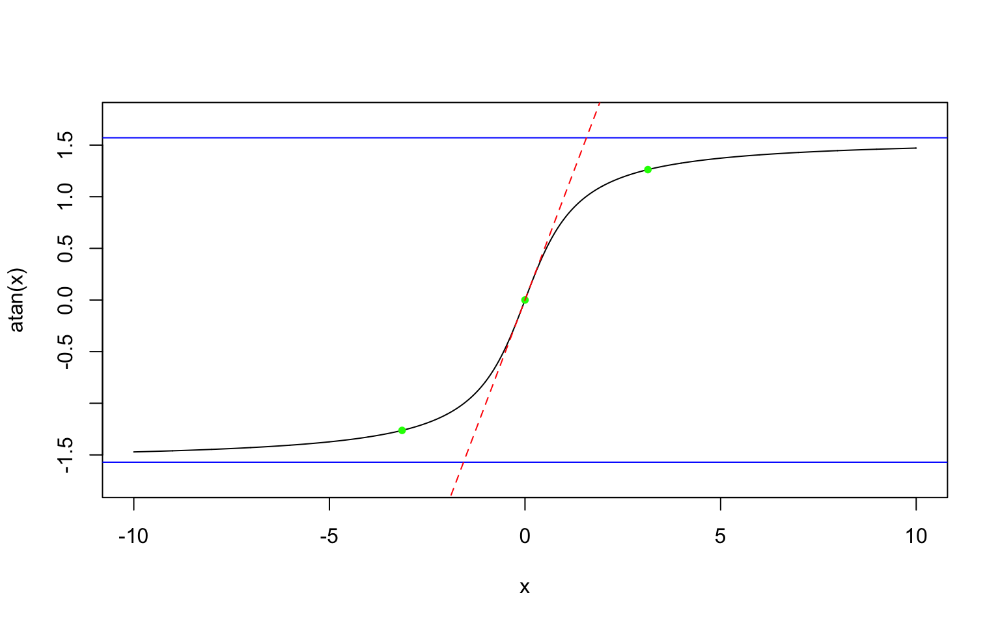
Exercice 2 :
# Question 1
data(airquality)
head(airquality) Ozone Solar.R Wind Temp Month Day
1 41 190 7.4 67 5 1
2 36 118 8.0 72 5 2
3 12 149 12.6 74 5 3
4 18 313 11.5 62 5 4
5 NA NA 14.3 56 5 5
6 28 NA 14.9 66 5 6# Question 2
pairs(airquality)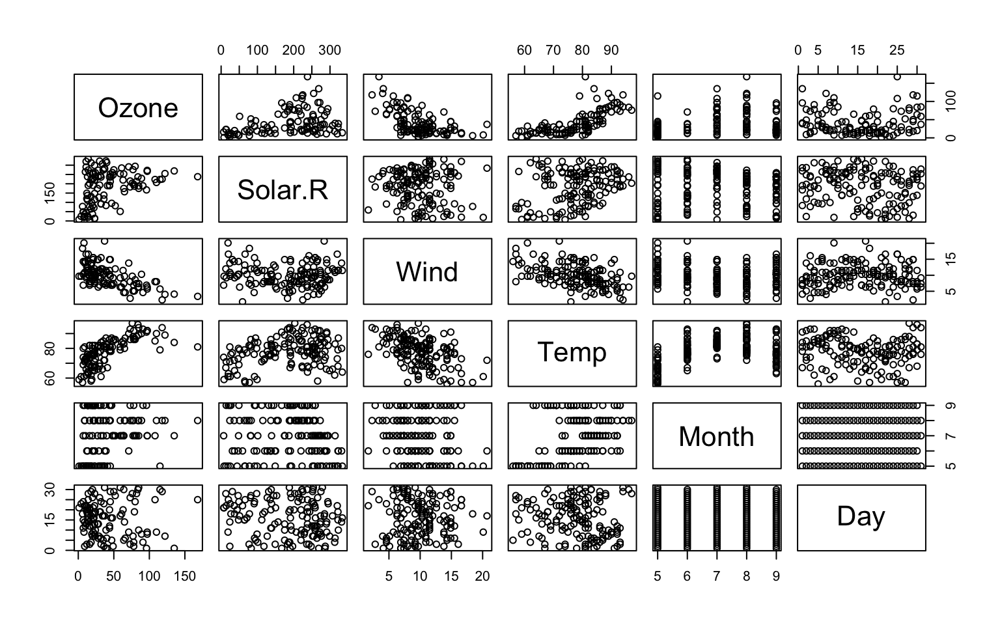
# Question 3
par(mfrow = c(2, 2))
boxplot(airquality[, 1:4])
pie(table(airquality[, "Month"]))
plot(airquality$Ozone, airquality$Wind, col = airquality$Month, pch = 20)
legend(x = "topright", legend = unique(airquality$Month), col = 1:length(airquality$Month),
pch = 20)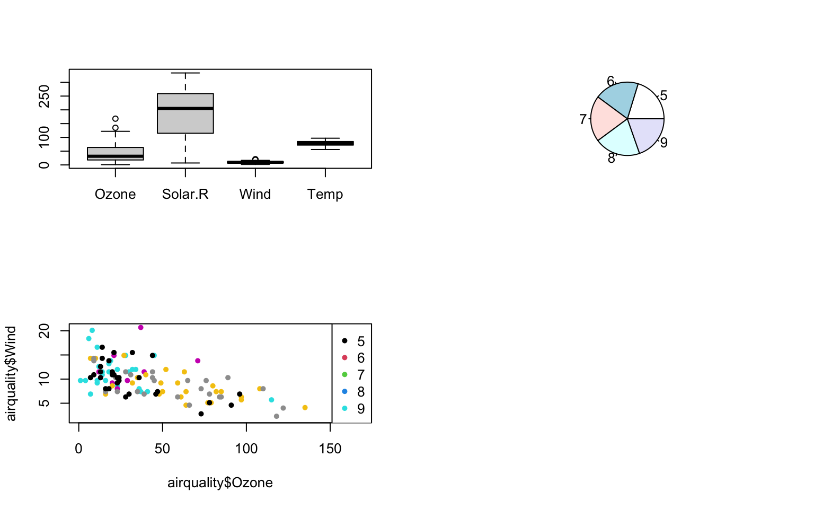
Exercice 3 :
plot(0, 0, xlim = c(-15, 15), ylim = c(-15, 15), type = "n", axes = FALSE, xlab = "",
ylab = "")
points(0, 0, pch = "+", cex = 4)
points(c(-4, 4), c(5, 5), pch = "O", cex = 4)
lines(c(-3, 3), c(-5, -5), lwd = 3)
lines(c(-3, 3), c(-6, -6), lwd = 3)
lines(10 * sin(0:360 * pi/180), 10 * cos(0:360 * pi/180), lwd = 5)
# En option, le chapeau
lines(c(-12, 12), c(10, 10), lwd = 3)
rect(-6, 10, 6, 14, border = 1, lwd = 3, col = 1)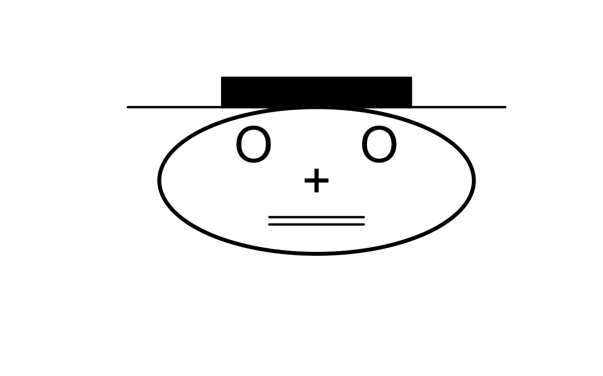
Exportation de graphiques
Dans l’environnement Windows, une première solution consiste à copier
le graphique (menu Fichier > Copier vers le
presse-papier). Le graphique ainsi placé dans le presse-papier peut
ensuite être collé dans le logiciel de son choix.
Pour sauvegarder le graphique dans un fichier, on utilisera dans le menu Fichier la rubrique Sauver sous. Plusieurs formats sont disponibles : vectoriel (métafichier), postscript, pdf, png, bmp, jpeg.
Une autre façon de procéder est d’utiliser les fonctions associées à
la sauvegarde de fichiers graphiques : bmp(),
jpeg(), png(), pdf(),
postscript().
Cette procédure est également utile en environnement Windows lorsque l’on souhaite sauver un graphique tracé lors du déroulement d’une fonction.
On peut également utiliser la commande dev.print(...)
pour sauvegarder une figure en pdf ou eps.
Programmation
Cette partie est consacrée à la création des fonctions, les
instructions de contrôle, la syntaxe des itérations et la fonction
apply() (et ses dérivées).
Créer une fonction
Il est possible sous R de construire ses propres fonctions. Il est
conseillé d’écrire sa fonction dans un fichier
nomfonction.R, puis dans la console, de charger la fonction
grâce à la commande >source("nomfonction.R") et de
l’utiliser. On peut également écrire directement la fonction dans la
console. De manière générale, la définition d’une nouvelle fonction
passe par l’expression suivante :
nomfonction=function(arg1[=exp1],arg2[=exp2],...){
bloc d instructions
sortie = ...
return(sortie)
}Les accolades signalent le début et la fin du code source de la fonction, les crochets indiquent le caractère facultatif des valeurs par défaut des arguments. L’objet sortie contient le ou les résultats retournés par la fonction, on peut en particulier utiliser une liste pour retourner plusieurs résultats.
Exemples
Exemple 1
MaFonction = function(x) {
x + 2
}
MaFonctionfunction(x) {
x + 2
}MaFonction(3)[1] 5x = MaFonction(4)
x[1] 6Fonction2 = function(a, b = 7) {
a + b
}
Fonction2(2, b = 3)[1] 5Fonction2(5)[1] 12Exemple 2
Fonction retournant le périmètre et la surface d’un cercle à partir de son rayon :
CalculsCercle = function(r) {
p = 2 * pi * r
s = pi * r * r
resultats = list(perimetre = p, surface = s)
return(resultats)
}
res = CalculsCercle(3)
res$perimetre
[1] 18.84956
$surface
[1] 28.27433res$surf[1] 28.27433Exercice :
Enoncé
Construire une fonction qui prend en argument deux réels x et y et qui retourne l’arrondi à 3 chiffres après la virgule de \(x^2 + y\). Vous pouvez vous aider de la fonction
round().Construire une fonction qui permet de calculer la densité de probabilité d’une loi normale de moyenne \(m\) et d’écart-type \(s\) au point \(x\).
Correction
Question 1
arrond = function(x, y) {
s = round((x^2) + y, 3)
return(s)
}
arrond(1.23456, 9.8765)[1] 11.401Question 2
densitegauss = function(m, sigma, x) {
f = (1/(sqrt(2 * pi) * sigma)) * exp(-((x - m)^2)/(2 * sigma^2))
return(f)
}
densitegauss(1, 2, 1.2)[1] 0.1984763dnorm(1.2, 1, 2)[1] 0.1984763Structures de contrôle et itérations
Instructions conditionnelles
La syntaxe if(condition){instructions} permet de
calculer les instructions uniquement si la condition est vraie. Le code
if(condition){ A }else { B } calcule les instructions A si
la condition est vraie et les instructions B sinon. On peut également
utiliser ifelse.
Dans l’exemple suivant, les deux commandes sont équivalentes :
if (x > 0) {
y = x * log(x)
} else {
y = 0
}
y = ifelse(x > 0, x * log(x), 0)Exercice
Enoncé
Soit \(X\) une variable aléatoire de loi de Poisson de paramètre \(\lambda=2\). Écrire une fonction qui prend en argument un réel \(x\) et qui retourne la probabilité que \(X\) soit égal à \(x\).
Correction
Question 1
Poiss = function(x) {
p = NULL
if ((x >= 0) & (round(x) == x)) {
p = exp(-2) * (2^x)/(factorial(x))
} else {
print("x n'est pas un entier")
}
return(p)
}
Poiss(3)[1] 0.180447dpois(3, 2)[1] 0.180447Poiss(1.5)[1] "x n'est pas un entier"NULLItérations
On utilise les boucles pour exécuter plusieurs fois une instruction ou un bloc d’instructions. Les trois types de boucle sont :
- la boucle for :
for(var in seq){ commandes } - la boucle while :
while(cond){ commandes } - la boucle repeat :
repeat { commandes ; if (cond) break }
Dans une boucle for, le nombre d’itérations est fixe alors qu’il peut être infini pour les boucles while et repeat !
Exemples
Pour illustrer les trois types de boucle, on a codé de trois façons
différentes la somme des éléments d’un vecteur x ce qui
correspond à la fonction sum() de R.
Exemple for()
somme1 = function(x) {
t = 0
for (i in 1:length(x)) t = t + x[i]
return(t)
}
x = seq(1:10)
somme1(x)[1] 55sum(x)[1] 55Exemple while()
somme2 = function(x) {
t = 0
i = 1
while (i <= length(x)) {
t = t + x[i]
i = i + 1
}
return(t)
}
x = seq(1:10)
somme2(x)[1] 55sum(x)[1] 55Exemple repeat()
somme3 = function(x) {
t = 0
i = 1
repeat {
t = t + x[i]
i = i + 1
if (i > length(x))
break
}
return(t)
}
x = seq(1:10)
somme3(x)[1] 55sum(x)[1] 55Exercice
Enoncé
- Écrire une fonction ma.variance qui calcule la variance
empirique corrigée pour un vecteur \(x = (x_1,
. . . , x_n)\). Comparer avec la fonction prédéfinie
var(). - Écrire une fonction qui calcule les \(n\) premiers termes de la suite de Fibonacci (\(u_1=0, u_2=1, \forall n>2, u_n=u_{n-1}+u_{n-2}\))
- Ecrire une fonction qui prend en entrée un entier \(x\) et retourne sa factorielle \(x!\) avec une boucle for() puis avec une boucle while().
Correction
Question 1
ma.variance = function(x) {
v = 0
m = 0
n = length(x)
for (i in 1:n) {
v = v + x[i]^2
m = m + x[i]
}
vv = (v - ((m^2)/n))/(n - 1)
return(vv)
}
x = rnorm(10, 0, 2)
ma.variance(x)[1] 4.556904var(x)[1] 4.556904Question 2
fibo = function(n) {
res = rep(0, n)
res[1] = 0
res[2] = 1
for (i in 3:n) {
res[i] = res[i - 1] + res[i - 2]
}
return(res)
}
fibo(10) [1] 0 1 1 2 3 5 8 13 21 34Question 3
facto1 = function(x) {
res = 1
for (i in 1:x) {
res = res * i
}
return(res)
}
facto2 = function(x) {
res = 1
while (x > 1) {
res = res * x
x = x - 1
}
return(res)
}
factorial(5)[1] 120facto1(5)[1] 120facto2(5)[1] 120apply() et ses variantes
Il est recommandé d’éviter les boucles très chronophages. On peut
utiliser pour cela la fonction apply() et ses variantes
sapply(), lapply(), tapply() sur
des vecteurs ou matrices.
La fonction apply() permet d’appliquer la même fonction
FUN sur toutes les lignes (MARGIN=1) ou les colonnes
(MARGIN=2) d’une matrice MAT :
apply(MAT , MARGIN, FUN).
Les fonctions lapply() et sapply()
calculent la même fonction sur tous les éléments d’un vecteur ou d’une
liste. La commande lapply(X,FUN, ARG.COMMUN) permet
d’appliquer la fonction FUN à tous les éléments du vecteur ou
de la liste X. Les valeurs de X sont affectées au
premier argument de la fonction FUN. Si la fonction
FUN a plusieurs paramètres d’entrée, ils sont spécifiés dans
ARG.COMMUN. Cette fonction retourne le résultat sous la forme
de listes. sapply() est une fonction similaire à
lapply() mais le résultat est retourné sous forme de
vecteurs, si possible.
La fonction tapply() applique une fonction FUN
sur les sous-groupes d’un vecteur X définis par une variable de
type factor GRP : tapply(X,GRP,FUN,...).
Exemples
data(iris)
head(iris) Sepal.Length Sepal.Width Petal.Length Petal.Width Species
1 5.1 3.5 1.4 0.2 setosa
2 4.9 3.0 1.4 0.2 setosa
3 4.7 3.2 1.3 0.2 setosa
4 4.6 3.1 1.5 0.2 setosa
5 5.0 3.6 1.4 0.2 setosa
6 5.4 3.9 1.7 0.4 setosaapply(iris[, 1:4], 2, mean)Sepal.Length Sepal.Width Petal.Length Petal.Width
5.843333 3.057333 3.758000 1.199333 apply(iris[, 1:4], 1, mean) [1] 2.550 2.375 2.350 2.350 2.550 2.850 2.425 2.525 2.225 2.400 2.700 2.500
[13] 2.325 2.125 2.800 3.000 2.750 2.575 2.875 2.675 2.675 2.675 2.350 2.650
[25] 2.575 2.450 2.600 2.600 2.550 2.425 2.425 2.675 2.725 2.825 2.425 2.400
[37] 2.625 2.500 2.225 2.550 2.525 2.100 2.275 2.675 2.800 2.375 2.675 2.350
[49] 2.675 2.475 4.075 3.900 4.100 3.275 3.850 3.575 3.975 2.900 3.850 3.300
[61] 2.875 3.650 3.300 3.775 3.350 3.900 3.650 3.400 3.600 3.275 3.925 3.550
[73] 3.800 3.700 3.725
[ reached getOption("max.print") -- omitted 75 entries ]lapply(iris[, 1:4], mean)$Sepal.Length
[1] 5.843333
$Sepal.Width
[1] 3.057333
$Petal.Length
[1] 3.758
$Petal.Width
[1] 1.199333sapply(iris[, 1:4], mean)Sepal.Length Sepal.Width Petal.Length Petal.Width
5.843333 3.057333 3.758000 1.199333 tapply(iris[, 1], iris[, 5], mean) setosa versicolor virginica
5.006 5.936 6.588 Exercices
Enoncé 1
Soit la fonction suivante :
Exo1 = function(M) {
res = rep(0, 5)
for (i in 1:5) {
tmp = 0
for (j in 1:4) {
tmp = tmp + M[i, j]
}
res[i] = tmp
}
return(res)
}
M = matrix(1:20, nrow = 5, ncol = 4)
Exo1(M)Proposer une fonction équivalente sans aucune boucle.
Enoncé 2
- Réaliser une liste de \(100\)
réalisations d’une loi normale \(\mathcal{N}(m,1)\) pour \(m=-2\), \(0\) et \(2\) respectivement en utilisant
lapply()etrnorm(). - Créer un vecteur contenant la moyenne de chaque échantillon de la question 1.
Correction
Exercice 1 :
M = matrix(1:20, nrow = 5, ncol = 4)
apply(M, 1, sum)[1] 34 38 42 46 50Exercice 2 :
x = lapply(c(-2, 0, 2), function(x) {
rnorm(1000, mean = x, sd = 1)
})
sapply(x, mean)[1] -1.965681601 -0.005320404 2.041520544Entrée / Sortie
Importation d’un jeu de données
Pour importer un tableau de données contenu dans un fichier texte en
un data.frame, on utilise la fonction read.table(). Par
exemple, pour un fichier nommé “Tableau.txt”, on utilisera la commande
Tab1 = read.table("Tableau.txt") qui crée un data.frame
Tab1. Si le fichier n’est pas placé dans le répertoire courant,
on pourra spécifier le chemin d’accès de ce dernier directement dans la
commande read.table(). Cette dernière admet les options
principales suivantes :
- header : indique si la première ligne contient des noms de variables. Par défaut, la valeur de cette option est FALSE.
- sep : précise le séparateur de champ dans le fichier entre guillemets (” ” par défaut).
- dec : le caractère utilisé pour les décimales (“.” par défaut).
- row.names : indique par l’intermédiaire d’un vecteur de mode caractère le nom des lignes (par défaut : 1; 2; 3; : : : ).
- col.names : idem pour les colonnes.
- na.strings : précise la valeur des données manquantes. Par défaut, la valeur de cette option est “NA”.
- nrows : nombre maximum de lignes à lire.
- skip : nombre de lignes à sauter avant de commencer à lire des données. Cette option est utile quand le fichier texte contient par exemple un préambule.
- blank.lines.skip : si “TRUE”, ignore les lignes blanches.
- comment.char : précise le caractère utilisé pour faire des commentaires. Toutes les lignes commençant par ce caractère ne seront pas prises en compte.
Cette liste d’options n’est pas exhaustive (cf l’aide en ligne
help(read.table)) mais permet déjà d’analyser un nombre
conséquent de fichiers textes. Les fonctions read.csv() et
read.csv2() en sont des cas particuliers, c’est-à-dire avec
des options spécifiques (caractère séparateur, marque décimale) adaptées
aux fichiers lus / écrits par des tableurs en format
.csv .
Exercice
Enoncé
Executez les commandes suivantes pour préparer l’exercice.
data(iris)
dir.create("DataAux")
write.table(iris, file = "DataAux/iris1.txt", sep = ";", row.names = F, col.names = T)
rownames(iris) = paste("indiv", 1:nrow(iris), sep = "-")
write.table(iris, file = "DataAux/iris2.csv", row.names = T, col.names = F)
write.table(iris, file = "DataAux/iris3.txt", quote = FALSE, dec = ",", sep = "*")Chargez à l’aide de la fonction read.table() les données
iris1.txt, iris2.csv et iris3.txt disponibles
dans le dossier DataAux.
Correction
iris1 = read.table("DataAux/iris1.txt", header = T, sep = ";")
head(iris1) Sepal.Length Sepal.Width Petal.Length Petal.Width Species
1 5.1 3.5 1.4 0.2 setosa
2 4.9 3.0 1.4 0.2 setosa
3 4.7 3.2 1.3 0.2 setosa
4 4.6 3.1 1.5 0.2 setosa
5 5.0 3.6 1.4 0.2 setosa
6 5.4 3.9 1.7 0.4 setosairis2 = read.table("DataAux/iris2.csv", header = F, row.names = 1)
head(iris2) V2 V3 V4 V5 V6
indiv-1 5.1 3.5 1.4 0.2 setosa
indiv-2 4.9 3.0 1.4 0.2 setosa
indiv-3 4.7 3.2 1.3 0.2 setosa
indiv-4 4.6 3.1 1.5 0.2 setosa
indiv-5 5.0 3.6 1.4 0.2 setosa
indiv-6 5.4 3.9 1.7 0.4 setosairis3 = read.table("DataAux/iris3.txt", header = T, row.names = 1, sep = "*", dec = ",")
head(iris3) Sepal.Length Sepal.Width Petal.Length Petal.Width Species
indiv-1 5.1 3.5 1.4 0.2 setosa
indiv-2 4.9 3.0 1.4 0.2 setosa
indiv-3 4.7 3.2 1.3 0.2 setosa
indiv-4 4.6 3.1 1.5 0.2 setosa
indiv-5 5.0 3.6 1.4 0.2 setosa
indiv-6 5.4 3.9 1.7 0.4 setosaExportation
Exportation en fichier texte
Si maintenant on désire sauvegarder un objet R dans un fichier texte,
on peut utiliser la commande write.table(). Les principales
options de cette fonction sont :
- file : nom du fichier dans lequel écrire (vérifier le répertoire courant)
- append : prend une valeur logique. Si TRUE, R ajoute les données dans le fichier concerné sans effacer les précédentes. La valeur par défaut est FALSE.
- sep : précise le séparateur à utiliser.
- eol : caractère de fin de ligne. Par défaut prend la valeur “n” (retour chariot)
- na : caractère à utiliser pour les données manquantes.
- dec : précise le caractère à utiliser pour les décimales.
Sauvegarde .RData
R permet d’enregistrer des objets entiers, en conservant à la fois les données contenues dans les objets et les structures des objets.
La fonction save.image() peut être utilisée à tout
moment pour enregistrer une image de session, c’est à dire l’ensemble
des objets dans l’environnement de travail d’une session R. La
sauvegarde d’une image de la session vous est également proposée lors de
la fermeture de R.
save.image(file = "eximage.RData")La fonction save() permet d’enregistrer spécifiquement
un ou des objets dans un fichier de format .RData. Ce fichier
peut être à tout moment rechargé sous R avec la fonction
load(). Voici un exemple :
x <- stats::runif(20)
y <- list(a = 1, b = TRUE, c = "oops")
save(x, y, file = "xy.RData")
load("xy.RData")On peut aussi enregistrer un seul objet, sans inclure le nom de
l’objet, à l’aide de la fonction saveRDS(). L’objet,
sauvegardé au format .rds peut être rechargé avec la fonction
readRDS().
Pour plus de détails sur les importations et exportations, se référer au document R Data Import/Export disponible sur le CRAN.